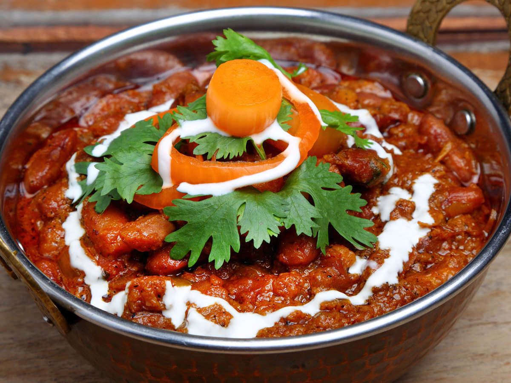
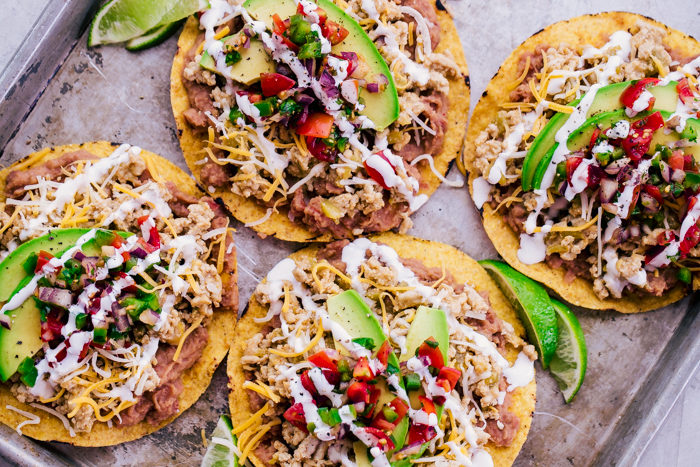
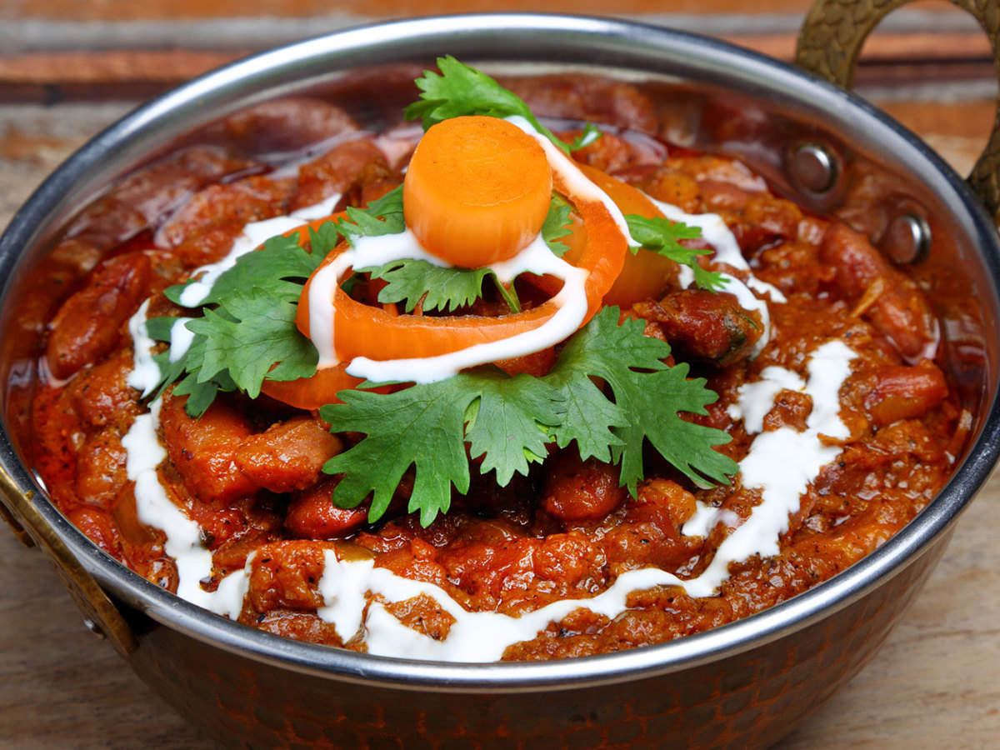
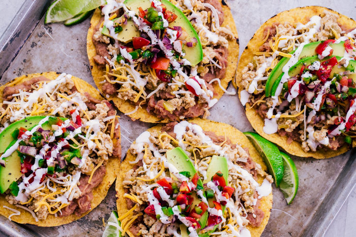
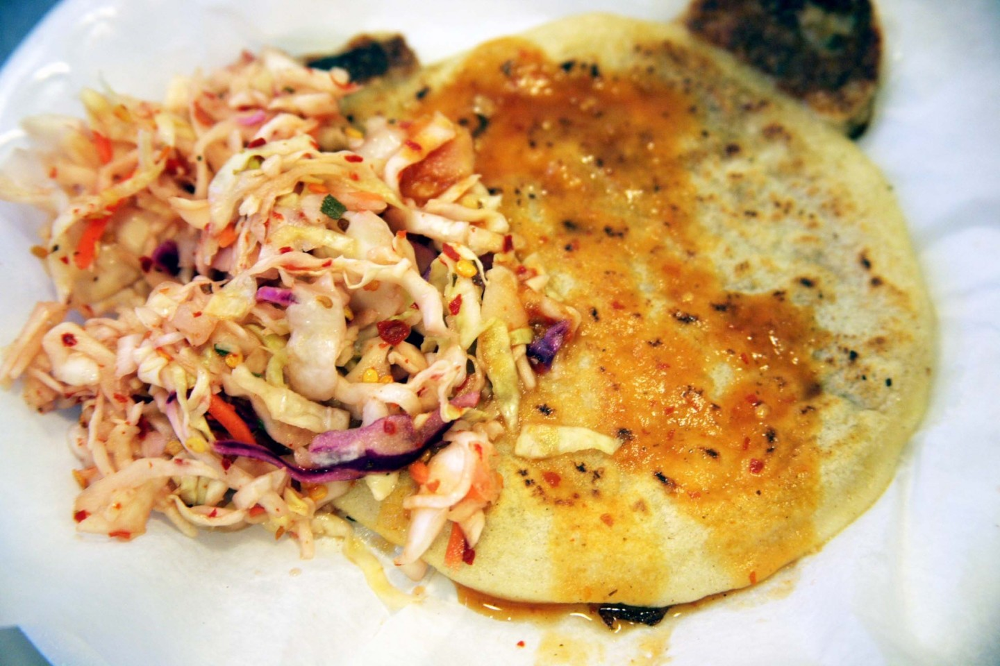
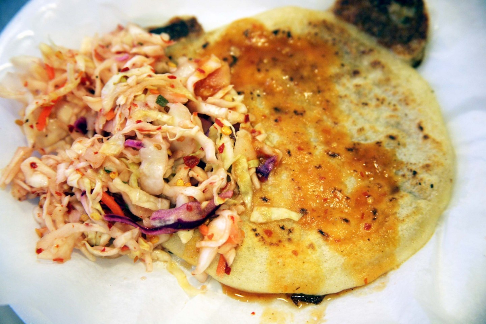

I love foods from a ton of different places around the world, and my top three favorite food regions would have to be the Middle East, East and South Asia, and Central America. Scroll to take a tour of my favorite dishes from each region and why I love them.


 



 

Middle Eastern
My mom is from Lebanon, and my dad is from Iraq, so I might be a little biased when I say that Middle Eastern cuisine is supreme. Everybody knows hummus and chicken shawarma, but I want to show off the best dishes I grew up eating every day.
My all time favorite Lebanese dish is batata harra, which literally translates to "spicy potatoes." Whenever I was having a bad day, needed a pick-me-up, or generally had any snack craving, my mom greeted me with a steaming hot plate of fried potatoes garnished with cilantro and doused with fresh lemon juice. If you have to try one thing from this site, it has to be this.
For a more refreshing meal, I always turn to a bowl of fatoush. The Middle Eastern salad isn't complete without being drizzled with extra virgin olive oil. we take our olive oil very seriously in Lebanon. Of course, the best part of fatoush is the the crispy fried pieces of bread on top and a hearty scoop of sumac.
Dolma (also called warak enab) are rolled grape leaves stuffed with either a meat and rice mixture or a vegetable mixture for a meatless option. I personally prefer my dolma to be sour, so I drench them in lemon juice. Unfortunately, making dolma is a day-long process, so we don't eat it often at home. But when we do, I stuff myself until I can't walk.
East and South Asian
Whenever I go to a Japanese restaurant, I don't even look at a menu. I immediately order chicken katsu. Nothing beats the texture of the crispy chicken and the perfectly paired sauce. I've never not enjoyed a plate of chicken katsu, especially when I have a piping hot bowl of miso soup beforehand.
My favorite Thai dish has been massaman curry for as long as I can remember. At a local Thai restaurant near my house, I went with my parents and ordered a completely differnt dish, but I accidentally recieved a bowl of massaman curry instead of what I ordered. one of the best accidents that have ever happened to me.
Rajma, an Indian dish, is composed of red kidney beans and more spices that I can count. I was first introduced to it at an ethnic food night event in one of my student organizations, and it's been my favoritre Indian dish since.
Central American
If you've never had tostadas, you're absolutely missing out. Just thinking about shredded chicken, fresh avocado slices, melted cheese, diced tomatoes, and flavorful crema sauce makes my mouth water. I've never finished a tostada without being sad that I didn't have more.
Baleadas, a dish native to Honduras, is a flatbread meal filed with meat, avocado, crema sauce, and plantains. a very unique addition that many people might not have tried before.
Pupusas are very popular in El Salvador and are made from cornmeal or rice flour. Pupusas are so popular in El Salvador that it has been declared the national dish and even has it's own holiday to celebrate it.